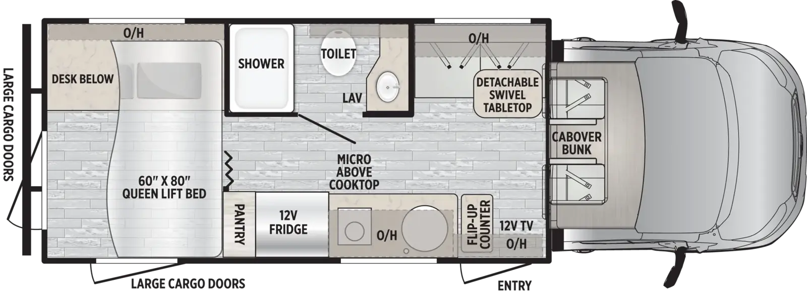
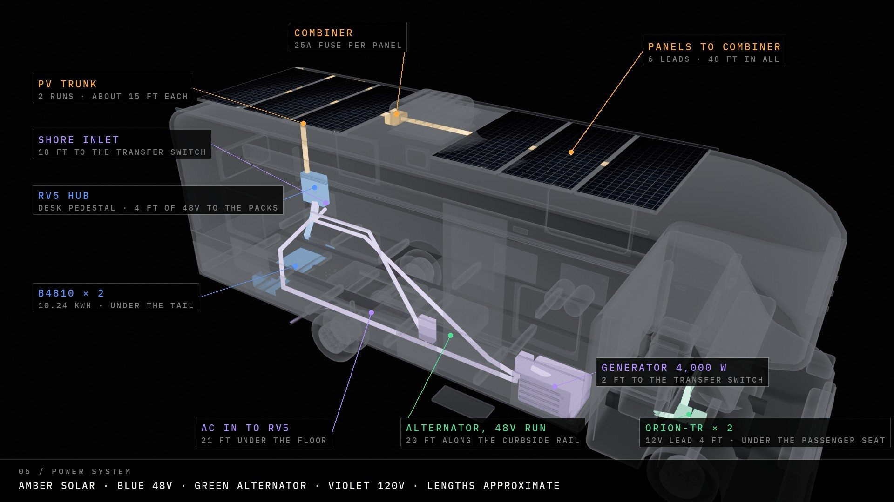
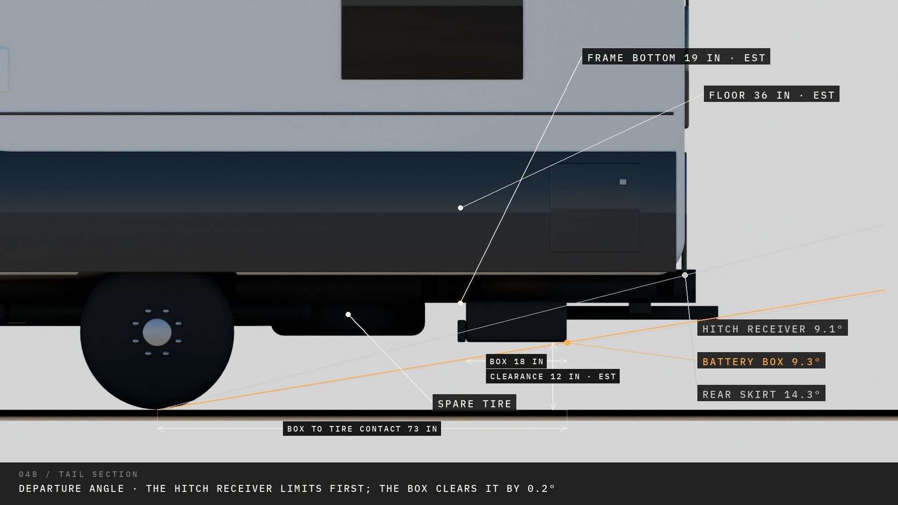

Four views of the stock coach, with the new hardware placed in it: the floor plan, a side section, the underbody and the roof. Each new part has a number that matches the schedule below, which says where it goes, what it takes the place of, how it mounts and what it connects to. Positions are inches forward of the rear wall. They come from the model and get confirmed with a tape measure.
East to West’s factory 22NF floorplan, scaled to 26 ft, with the new hardware placed on it. Roadside (driver side) is at the top. Dashed shapes are above the ceiling or below the floor.
A cut through the coach seen from the side, showing how high everything sits: roof, cabin and underbody. Washer A and B are both drawn; they sit on opposite sides of the coach.
Looking down through the floor at the chassis: frame rails, tanks, generator, spare and the new battery box. Lines show the main cable runs and their modelled lengths.
Six panels running across the roof, three behind the AC and three ahead, onto the cab-over. Yellow outlines mark the existing fans and skylight, which end up under the panels.
| # | Part · where it goes | Position | Takes the place of | Mount and access | Connects to |
|---|---|---|---|---|---|
| 1 | Bluetti RV5 hubIn the rear-end pedestal of the factory desk (“desk below”), roadside rear corner under the lift bed, on the floor against the roadside wall. | x 1–22 in from rear wall · roadside wall · floor level | The rear-end desk pedestal’s storage. With the washer at A, the desk keeps no drawer stack. | Bolted to the floor through its mounting holes. Pedestal needs a vented front panel so the RV5 keeps 7.87 in of open air at its vents. Front panel removable for service. | 48 V down through the floor to the packs (3 ft) · PV trunks from the roof gland straight above (14 ft each) · 120 V in from the transfer switch in the pantry base (about 9 ft) · 120 V out to the factory breaker panel (location to find) · 12 V out to the coach 12 V panel. |
| 2 | 2 × B4810 in a sealed boxUnder the tail, across the frame rails, between the hitch crossmember and the spare tire. | x 21–39 in from rear wall (about 64 in behind the rear axle) · 52 × 18 × 7.5 in box · bottom about 12 in off the ground | Nothing inside. Uses empty space behind the spare. Must clear the hitch receiver tube, the exhaust tip, and the dump valves. | Hangers bolted to the coach builder’s frame extension (not welded). Lockable lid, baffled vent, low drain, skid plate. Packs fused inside the box at their terminals. | 48 V up through the floor into the desk base (3 ft) · alternator 48 V run from the cab (about 16 ft). |
| 3 | Main DC disconnect, PV breakers, pack fuseDisconnect and both PV breakers inside the desk base next to the RV5. The pack fuse goes in the battery box. | Desk base, beside #1 · pack fuse in #2 | Shares the desk base with the RV5. | Reachable from inside the coach without crawling under. (The 3D model draws the disconnect on the box; this map moves it inside.) | Sits between the packs and the RV5, and between each PV trunk and its RV5 input. |
| 4 | Bluetti Epad (control screen)On the roadside wall at the desk, just above the desk base. | x 26–28 in · roadside wall · eye level when seated | Wall space only. | Surface mount. Ethernet to the RV5 directly below. | Data cable to #1 (under 3 ft). |
| 5 | Roof cable glandRear roadside corner of the roof, directly above the desk. | x 8–13 in · 36–41 in roadside of centre | Nothing. New sealed penetration (or the factory solar side-port if it lands here). | Sealed gland with written roof-warranty coverage. The two PV trunks drop inside the rear roadside wall into the desk base. | Both PV trunks from #7 to #1. |
| 6 | 6 × Callsun 275 W panelsRoof, one crosswise row of six: panels 1–3 behind the AC, panels 4–6 ahead of it, running onto the cab-over roof. | x 12–105 and 152–245 in · each 68.35 in across the roof | Roof space only. The existing fans and skylight sit under the panels (see fit check). | Z-brackets or a low rail, about 2.5 in off the roof. Walk margin left on both sides. | Panel leads to #7 (4–12 ft each, about 48 ft total). |
| 7 | Combiner box (3 + 3, 25 A per panel)Roof centreline, between panels 1–3 and the AC. | x 106–113 in · centreline | Nothing. | Bolted to the roof, sealed. Two groups of three, each with a 25 A fuse per panel. | Panels in; two PV trunks out to #5 then #1 (14 ft each). |
| 8 | Furrion Chill Cube 18K (ducted)The existing 14 × 14 in AC opening. Swaps one-for-one with the factory unit. | Opening modelled at x 116–145 in (centre x 130). Real position unverified. | The factory AC (removed). Its ceiling assembly is replaced by the Chill Cube air distribution box, which feeds the existing ducts. | Bolts through the existing opening. Confirm the air distribution box mates to the factory ducts before buying. | 120 V from the main panel (RV5 output). |
| 9 | Starlink MiniRoof, roadside of the AC on a flat mount. | x 124–137 in · 22–33 in roadside of centre | Roof space only. | Flat mount, adhesive or bolted. Cable rides the PV gland or the AC chase. | 12 V from the RV5 12 V output. |
| 10 | 2 × Victron Orion-Tr 12/48Under the passenger (curbside) cab seat, close to the starter battery. | x 206–223 in · curbside · under the seat base | Space under the passenger seat. The cab seats swivel to face the table, so the swivel base must leave room (fit check). | Screwed to the seat base or the floor beside it. Ignition-switched. Fuse at the starter battery. | 12 V from the starter battery (about 3 ft) · 48 V back to the packs along the curbside rail (about 16 ft, about 16 A, so a small cable). |
| 11 | Transfer switchIn the base of the pantry, curbside, just forward of the lift bed. Candidate spot: move it next to the factory power center if that turns out to be nearby. | x 73–79 in · curbside · floor of the pantry | The bottom shelf of the pantry. | Screwed to the floor. Service through the pantry door. | Generator in (length depends on the generator bay, unverified) · shore in through #12 · out to the RV5 AC input (about 9 ft). |
| 12 | Surge protector / EMS (hardwired)Beside the transfer switch in the pantry base. | x 79–85 in · curbside | The bottom shelf of the pantry. | Screwed to the floor next to #11. | Shore inlet in (inlet location unverified) · out to #11. |
| 13A | Splendide WDV2200XCD, location AThe bath end of the factory desk: replaces the desk’s bath-side drawer stack, backed against the shower wall. The desktop and kneehole stay (owner’s October 5 plan). | x 48–72 in · roadside, desk’s forward end | The desk’s bath-side drawer stack. The desk splits into RV5 pedestal (x 1–22), kneehole (x 22–48), washer cabinet (x 48–72). | Own cabinet, kept separate from the desk. Vent straight out the roadside wall. Water from the shower plumbing on the other side of the wall; drain to the grey tank. | Own 15 A circuit from the main panel. |
| 13B | Splendide WDV2200XCD, location BRear garage: curbside rear corner under the lift bed, across from the desk. | x 3–26 in · curbside rear corner | Garage floor space on the curbside. | Vent out the rear wall. Sits right inside the curbside large cargo door, so it blocks that door and part of the garage. Longer water and drain runs than A, and more rear-axle load. | Own 15 A circuit from the main panel. |
Cable lengths are measured along the routes drawn in the 3D model, rounded to the nearest foot.
Six panels at 30.3 in, 1 in gaps, 10.5 in for the combiner before the AC, 29 in of AC, and 7.5 in after it. In the model it runs from x 12 to x 245.
The model treats the roof as flat from the rear cap over the cab-over. The row starts 12 in from the rear cap and ends 11 in past the house-to-cab-over seam (x 234). The 1 in margin quoted earlier compared the row with the house section alone. Measure both sections.
A MaxxFan Deluxe with rain dome stands 5.0 in tall closed and 9.1 in open. Panels on 2.5 in brackets can’t pass over it.
The coach’s empty axle weights aren’t published, so the table works backwards. It totals everything the build and a loaded trip add to each axle, then shows the heaviest the empty axle can weigh and still stay under its rating (front 4,630 lb, rear 7,275 lb). Included: the build at its modelled positions, a full fresh tank (290.5 lb at the tank), a 40 lb tow bar on the receiver, a 200 lb driver, and 350 lb of gear spread midship.
| Scenario | Added to front axle | Added to rear axle | Empty rear axle can be at most | Empty front axle can be at most |
|---|---|---|---|---|
| Washer A · panels 29.8 lb each | +237 lb | +1342 lb | 5,933 lb | 4,393 lb |
| Washer A · panels 65.7 lb each | +278 lb | +1516 lb | 5,759 lb | 4,352 lb |
| Washer B · panels 29.8 lb each | +199 lb | +1381 lb | 5,894 lb | 4,431 lb |
| Washer B · panels 65.7 lb each | +240 lb | +1554 lb | 5,721 lb | 4,390 lb |
The box sits under the rear floor, and the RV5 sits in the desk pedestal right above it and slightly behind. The modelled run goes down through the pedestal floor and into the box: 37 in, about 3 ft. The 10–15 ft guess came from earlier layouts with the hub further forward. The longest 48 V run is now the alternator line from the Orions: about 20 ft at about 16 A, so a small cable. The pack fuse stays at the pack terminals inside the box.


